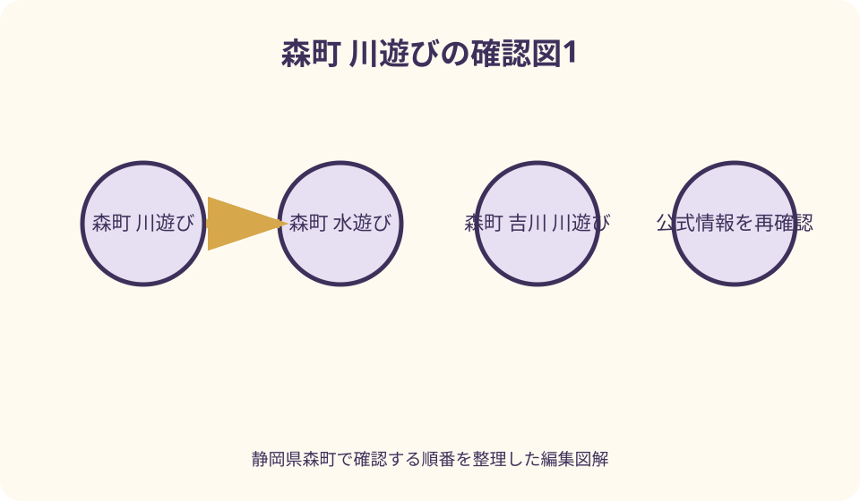
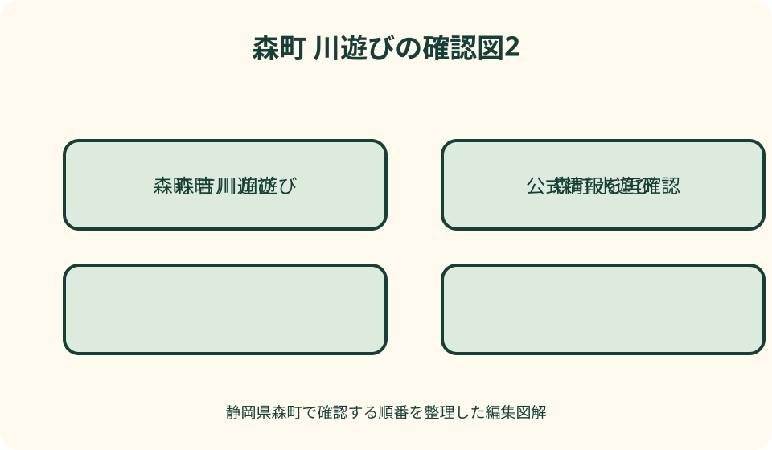

自然・安全｜最終確認 2026-08-10
静岡県森町の川遊び・水遊び場所を安全条件で比較｜宮川・吉川・管理体験
森町の水辺は、施設が受付・開催判断を行う管理体験と、監視員や遊泳区域が常設とは限らない自然河川に分けてください。アクティ森で当年の水辺体験がある場合も予約・対象年齢・中止条件を施設へ確認し、小國神社の宮川や吉川は『景観が紹介されている』ことを『川遊び可』へ読み替えません。前日までの上流雨、当日の雨量・水位、現地掲示、立入可否を確認し、一つでも不明なら入水しない計画にします。滑りにくく脱げにくい靴、子ども一人に継続して目を向ける大人、即時撤退できる乾いた代案が必要です。

編集イラスト最初に分ける——管理体験と自然河川は別物
森町の水辺を探す時は、運営者が受付、装備、開催判断を行う管理体験と、自然の流れへ各自が近づく河川空間を分けます。地図で水色に見える場所を遊び場一覧へ加えません。
管理体験でも事故が起きない保証はなく、自然河川でも穏やかな見た目が安全を意味しません。監視、救助、深さ、流速、底質、立入権限の確認方法が異なります。
アクティ森は複合体験施設ですが、施設紹介に吉川沿いの設備があることと、自由な入水許可は別です。当年の実施プログラムと利用区域を受付へ確認します。
宮川と吉川についても、散策や景観の公式紹介を川遊び案内へ変換しません。現地掲示、管理者、土地の利用条件が確認できない時は岸辺観察だけにします。
候補を安全条件で比べる——名称より確認主体を見る
比較表の第一列は場所名ではなく、誰が立入可否と中止を判断するかにします。施設受付、神社、河川・土地管理者など、当日に確認できる主体が不明なら候補から外します。
第二列は水との関わり方です。予約制プログラム、指定区域の体験、岸からの自然観察、河川への入水を混ぜず、公式に確認できた範囲だけを書きます。
第三列は撤退先で、屋内工房、休憩施設、車、寺社参拝等を記入します。濡れた子どもを安全に着替えさせられる場所がない候補は優先度を下げます。
第四列は通信、駐車、救急車が近づける経路です。山間の景色を『穴場』と評価せず、連絡と退避に時間がかかる条件として扱います。
アクティ森——当年の管理体験だけを予約する
森町公式はアクティ森を創作工房、アウトドア体験、販売、レストラン等を備えた複合施設として案内します。水辺体験の名称、開催日、年齢、予約は施設の当年情報で確認します。
過年度に鮎つかみ等が実施されていても、二〇二六年の常設体験とは限りません。開催告知が見つからない時は、現地へ行けば参加できると考えず受付へ電話します。
管理区域では、スタッフの説明、開始・終了、貸出装備、保護者同伴、撮影、体調申告に従います。参加費を払ったことを安全保証や必ず実施される権利と解釈しません。
中止時は陶芸、和紙等の屋内体験へ替えられるかを予約時に聞きます。水辺が中止でも施設全体が休館とは限らず、逆に屋内枠も満席なら利用できません。

吉川周辺——施設の岸辺と自然の流れを混同しない
アクティ森の公式紹介には、吉川の岸辺に沿うパターゴルフ等が掲載されています。岸辺に施設があることは、コース外の河川へ自由に降りられるという許可ではありません。
吉川キャンプ場やコテージ等の周辺施設も、運営者、敷地、宿泊者条件が異なります。別施設の利用者がアクティ森の受付だけで川へ入れるとは考えません。
自然河川は浅く透明に見えても、岩間の深み、流木、滑る石、急な流れがあります。深さを足で探る行為を安全確認にせず、入水可否が不明なら岸から離れます。
上流で雨が降れば、現地が晴れていても水位や濁りが変わり得ます。吉川周辺へ着いてから空だけを見ず、流域の雨量と水位情報を確認します。
小國神社の宮川——参拝・散策情報を遊泳許可にしない
小國神社公式は、宮川沿いの散策路と桜・紅葉の景観を紹介しています。これは境内自然の案内であり、水遊び場、遊泳区域、監視体制の案内ではありません。
境内では神社の現地掲示、祭典、立入規制、植生保護を優先します。以前に人が水へ入っていた写真を、現在の入水許可や子どもの利用可否の根拠にしません。
橋、護岸、川岸、濡れた石で撮影する時も、通行を妨げず、ロープ内や急斜面へ下りません。落とした物を拾うため水へ入る前に神社へ相談します。
水へ触れられない場合は、宮川の散策、参拝、ことまち横丁へ切り替えます。境内にいること自体を入水の必要条件とせず、乾いた計画で一日を成立させます。
前日までの上流雨を見る——現地天気だけでは足りない
川の状態は今いる地点の雨だけでなく、上流域で降った雨の影響を受けます。森町公式の防災情報から、雨量、河川水位、気象庁の防災気象情報へ進みます。
前日が大雨、夜間に強雨、上流で雨雲が続く場合は、当日が晴れても水辺計画を中止します。数字の自己流基準を作らず、公的警戒情報と管理者判断を優先します。
水位観測所の値は、目の前の全ての支流や淵の安全を示すものではありません。低い数値を入水許可と解釈せず、現地掲示と濁り・漂流物も確認します。
気象情報が新制度へ変更された年度は、古い警戒名称との対応を気象庁公式で読みます。過年度ブログの表を現在の撤退基準へ使いません。

現地で水の変化を見る——濁り・音・漂流物で撤退
到着時に水が濁る、枝や葉が増える、水音が強くなる、水面が短時間で上がる場合は、荷物をまとめて高い安全な場所へ移動します。観察を続けて理由を確かめません。
上流側の空が暗い、雷鳴、雨の匂い、管理者の声掛け、放送があれば、入水前でも終了します。予約時間や駐車料金を理由に判断を遅らせません。
川岸から車までの経路が増水で遮られる可能性を考え、退路の低い橋や飛び石を使いません。撤退時は子ども、人数、荷物の順ではなく、人の安全を最優先にします。
一度撤退した後、水が澄んだように見えても当日中に再開しません。管理された体験ならスタッフの再開判断、自然河川なら別日の再計画へ切り替えます。
靴と服装を準備する——裸足・サンダルを避ける
足元は、かかとが固定され、濡れても脱げにくく、底が滑りにくい水辺用の靴を選びます。裸足、脱げやすいサンダル、普段の滑る靴を浅瀬だからと使いません。
服は乾きやすく動きを妨げないものにし、着替え、タオル、濡れ物袋、保温用の上着を用意します。綿の服が濡れたままでも暖かいと考えません。
ライフジャケットが必要な活動は、体格に合う規格と正しい装着を運営者へ確認します。着用していれば大人の監督や撤退判断が不要になるわけではありません。
眼鏡、帽子、玩具、網は流されないよう管理し、追いかけて深い場所へ入らない約束をします。落とした物より人を優先し、管理者へ知らせます。
子どもの監督を決める——同行ではなく担当を固定
子どもと水辺へ行く大人は、誰がどの子を継続して見るかを到着前に決めます。複数の大人がいるから誰かが見ているだろう、という状態を作りません。
監督担当はスマートフォン撮影、荷物整理、下の子の着替えを同時に行いません。交代する時は、子どもの名前と現在位置を声に出して引き継ぎます。
年齢、泳力、身長を安全保証にせず、大人から手の届く範囲を活動条件にします。きょうだいで能力が違えば、同じ水深へ一緒に入れません。
グループでは人数を入水前、移動時、終了時に数えます。トイレや車へ戻る子も記録し、水辺と駐車場の間を一人で往復させません。
撤退基準を出発前に書く——現地で交渉しない
撤退条件は、警報・注意情報、管理者中止、上流雨、濁り、水位上昇、雷、体調不良、靴や装備不足、退路混雑のいずれか一つとします。全条件が重なるまで待ちません。
子どもにも、笛や合図が出たら理由を聞く前に岸へ戻ることを伝えます。あと五分、写真一枚、最後の一回という交渉を撤退時に行いません。
車の鍵、電話、救急用品は、流される岸辺へまとめて置きません。大人がすぐ持ち出せる防水袋へ入れ、緊急連絡先と現在地を共有します。
撤退後の着替え場所、温かい飲み物、屋内施設を決めておけば、中止を罰のように感じにくくなります。安全判断を家族の失敗として扱いません。
けが・行方不明時——自力捜索で二次被害を増やさない
人が流された、見えなくなった場合は、大人が無装備で追って水へ入らず、一一九へ場所と状況を伝えます。浮く物を安全な岸から渡せる場合も、自身の転落を避けます。
通報では静岡県周智郡森町、施設名、川名、近い橋や駐車場、人数、最後に見た位置を伝えます。地図ピンだけに頼らず、住所を事前に控えます。
切り傷や転倒でも、出血、意識、頭部打撲等があれば医療相談を行います。記事から処置を診断せず、救急担当や医療機関の指示に従います。
事故後は濡れた衣服を替え、本人の状態を観察します。写真撮影やSNS報告を先にせず、管理者への連絡、同行者確認、医療対応を優先します。
雨天・増水時の代案——水から完全に離れる
雨天代案は、別の川、滝、橋の下ではありません。アクティ森の陶芸・和紙等の屋内体験、森町立図書館、資料館、文化会館等、水位の影響から離れた場所を選びます。
アクティ森の屋内体験も予約、営業、年齢、満席を確認します。水辺中止後に必ず受け入れられるとは考えず、前日までに代案枠を問い合わせます。
小國神社参拝へ替える場合も、大雨や土砂災害、境内規制があれば移動しません。『屋根がある』ことを災害時の観光継続理由にしません。
町から避難情報や警戒情報が出た場合は観光代案を探さず、安全な場所へ移動します。施設の営業情報より自治体・気象庁の防災情報を優先します。
交通と通信を確認する——山間部の退出時間を先に決める
アクティ森は森町北部にあり、町公式は車や町営バスの案内を示しています。帰りの便、乗車場所、運休日を当年度情報で確認し、活動終了後に調べ始めません。
自然河川周辺は駐車場所が明示されない場合があります。路肩、農地、林道入口、私有地を短時間の駐車に使わず、管理者が示した場所だけに停めます。
携帯電話がつながりにくい可能性を考え、家族へ行き先、戻る時刻、車両、代案を共有します。通信不能を静かな穴場の魅力として評価しません。
日没前に着替えと退出を終える時刻を決めます。夕立、霧、動物、道路の落枝を考え、暗くなるまで水辺で粘る計画を作りません。
暑さと衛生も確認する——水の冷たさだけで体調を判断しない
川の水が冷たくても、岸辺の直射日光と湿度で熱中症の危険はあります。活動前から水分と日陰休憩を取り、帽子を流されないよう固定し、顔色や反応の変化を見ます。
子どもが震える、唇の色が変わる、動きが鈍い、強い疲れを訴える場合は、水から出して着替え、必要に応じて医療相談を行います。遊びたがることを継続可能の根拠にしません。
自然河川の水は飲用水ではありません。口へ入れない、傷がある時は入水を避ける、活動後に手足を洗うなど、家族の健康状態に応じた注意を医療機関等へ確認します。
食事や飲み物を岸辺へ放置せず、ごみと濡れた装備を持ち帰ります。野生動物や環境への影響を避け、洗剤を川で使ったり、石や生き物を持ち帰ったりしません。
ペット同伴では、施設規則、リード、他の利用者、野生動物、排せつ物処理を確認します。犬が泳げることを水辺全体の利用許可と考えず、人と動物の双方が流れへ近づかない撤退判断を共有します。
良い点——施設・防災情報・屋内代案を組み合わせられる
森町の良い点は、アクティ森という管理施設の情報と、町の雨量・河川水位・ハザードマップへの入口を公式サイトから確認できることです。
小國神社は宮川を境内自然として紹介し、散策へ切り替える材料があります。ただし景観紹介を入水案内へ拡張しないことが重要です。
水辺を中止しても、陶芸、和紙、図書館、資料館、寺社参拝等へ組み替えられます。安全判断で一日が空白になる不安を減らせます。
公式情報が複数あるからこそ、施設の開催判断、町の防災、県の水位、気象庁の警戒を役割別に重ねられます。一つの天気アプリだけへ依存しません。
注文したい点——浅い・透明・人がいるを安全根拠にしない
注文したい点は、浅く見える、透明、子どもが遊んでいるという目視を安全保証にしないことです。流速、底の穴、上流雨、立入権限は写真から分かりません。
ブログやSNSの『穴場』は、管理者、監視、駐車、救助を確認した表現とは限りません。本記事では人が少ない自然河川を推奨場所として掲載しません。
ライフジャケット、泳力、大人の人数も、増水時の入水を許可する条件ではありません。警戒情報や管理者中止があれば装備に関係なく撤退します。
過年度の鮎つかみや川遊び写真を、当年の実施保証へ使いません。施設公式に告知がなければ問い合わせ、回答が得られなければ別体験を選びます。
対案・結論——確認できない条件が一つあれば入水しない
結論として、管理者、立入可否、上流雨、水位、現地変化、装備、監督、退路、通信の九項目を表にします。一項目でも確認できなければ岸からの観察か屋内代案にします。
管理体験は当年の予約・中止条件、自然河川は立入可否と防災情報を確認します。二種類を同じチェック欄で『営業中』とまとめません。
前日、出発時、現地到着時の三回で情報を更新し、雨がなくても上流を見ます。濁り、音、漂流物、雷があれば即時撤退します。
安全保証ができる場所はありません。だからこそ、入らない判断、すぐ帰る準備、水から離れた代案を最初から旅程の一部にします。
大石の視点——遊ぶ場所より、やめられる計画を選ぶ
大石の視点では、川遊びの候補選びは景色や人の少なさではなく、誰が中止を決め、家族がすぐ従えるかで評価します。やめやすさが実用上の質です。
森町の川は山地から流れ、現地の晴れだけで状態を読めません。上流雨と町・県・気象庁の情報を重ね、数字を自己流の許可証にしません。
子どもの思い出を作るために、予定どおり入水する必要はありません。岸から観察し、陶芸へ替え、次回へ残す判断も森町での一日です。
管理体験と自然河川を分け、靴、監督、撤退、代案を事前に決める。この地味な準備が、水辺を安易な観光商品にしないための基本です。
公式情報・確認先
掲載内容は次の一次情報を基礎に整理しました。営業、料金、催し、交通は変わるため、出発前または手続き前にリンク先で最新情報を確認してください。
- 森町公式 アクティ森（静岡県森町、2026-08-10確認）
- 森町公式 防災情報・雨量河川水位（静岡県森町、2026-08-10確認）
- 森町公式 水防計画（静岡県森町、2026-08-10確認）
- 森町公式 災害に備えて（静岡県森町、2026-08-10確認）
- 小國神社 境内の自然・宮川（小國神社、2026-08-10確認）
- 静岡県 危機管理便利帳・サイポスレーダー（www.pref.shizuoka.jp、2026-08-10確認）
- 静岡県 新たな防災気象情報（www.pref.shizuoka.jp、2026-08-10確認）
- 気象庁 防災気象情報（www.jma.go.jp、2026-08-10確認）